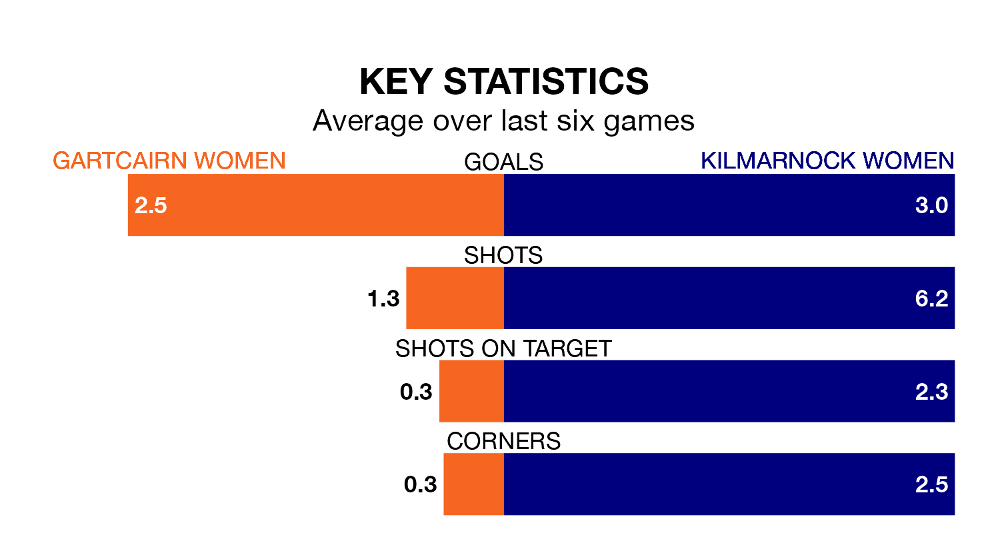

Gartcairn Women host Kilmarnock Women in Wednesday's late match at MTC Park looking to bounce back from defeat last time out in SWPL 2.
Gartcairn, who sit seventh in the league after 19 games, fell to a 0-2 away defeat to Livingston Women on March 3.
They face a Kilmarnock side who secured a draw in their last match, a 0-0 tie with Queen's Park Women, and who sit second in the table.
With 51 goals in 19 games so far this season, Kilmarnock are the league's second-highest scorers with 2.7 goals per game. And they are conceding fewer than average, letting in 22 goals at a rate of 1.2 per game.
Gartcairn, meanwhile, are below average scorers, with 1.4 goals per game, compared to a league average of 1.9. They have conceded 3.1 goals per game.
In the last 10 years, Gartcairn and Kilmarnock have played each other on eight occasions. They won three each, and they drew twice.
On average, Gartcairn scored 1.5 goals and Kilmarnock 2.2 in those matches.
Their last meeting was on December 17, when they played out a 2-2 draw.
The home side are in fantastic form in SWPL 2, with five wins and one loss from their last six games.
With four wins and a draw over that period, the visitors' form is slightly worse – they have taken 13 points from 18, compared to Gartcairn's 15.
Updated: 09:34 (UTC), 08/03/24